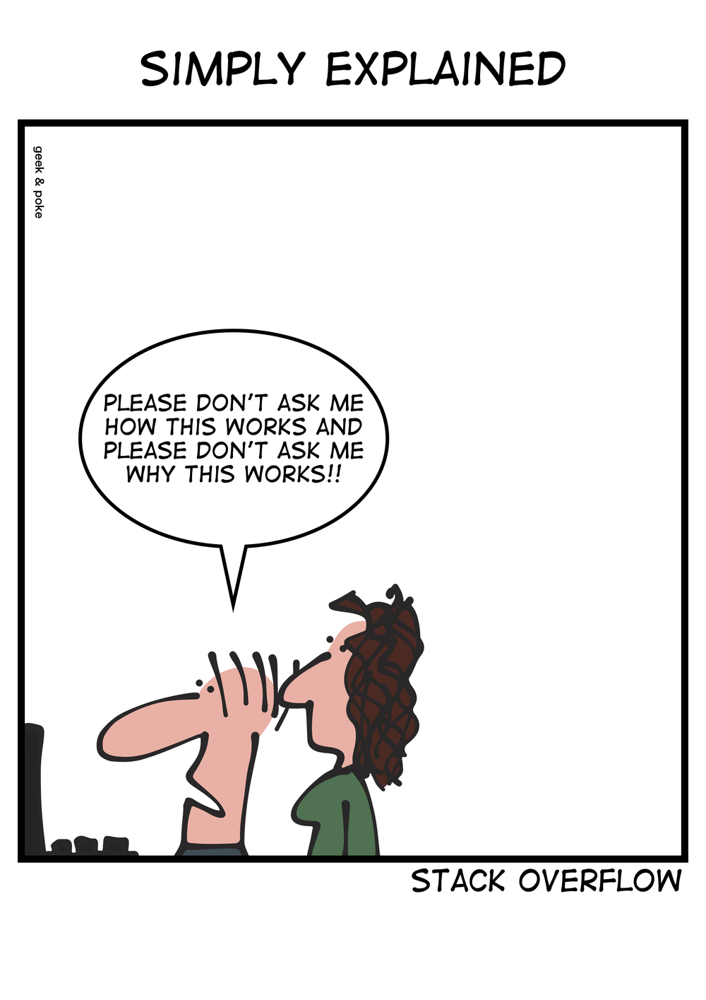

my_number = 5Programming basics
lecture
Programming in Julia
- We will now dive straight into programming in Julia, starting with simple examples and concepts, progressing step-by-step to more complicated topics
- To follow this lecture, you need to have a working Julia installation: see the homework on Installing Julia
- For today, don’t worry too much about whether what we do is useful – what we are doing is establishing a foundation for later for the actually useful stuff…
Plan
- Variables and types
- Arrays and broadcasting
- Functions
- Custom types
- First look at random numbers
- Interpreted vs. compiled languages
Variables and assignments
- In programming, a variable is a “storage box” that stores data for later use
- The data is assigned to the variable using the
=operator - Here, we assign the number 5 to a variable named
my_number:
- We can now do things such as:
my_number + my_number10Fundamental types
- Variables can store different types of data:
- Integers:
1,2,-100, … - Floating-point numbers (“floats”):
3.14,pi,1.0, … - Booleans:
true,false - Strings:
"John","Mary" - Arrays:
[1, 2, 3, 4],[1 2 3 4] - And some others… we’ll meet them later
- Integers:
Arithmetic operations
- Arithmetic operations are mostly self-explanatory. For example:
number1 = 15
number2 = 20
number3 = 10*(number1 + number2) - number1/number2
number3349.25String concatenation
- Julia overloads the
*operator for strings too:
string1 = "This "
string2 = "is a"
string3 = " sentence"
string1 * string2 * string3 * "!""This is a sentence!"Arrays
- An array is a (possibly multidimensional) collection of objects
- A one-dimensional array is a vector, a two-dimensional array is a matrix, and so on
- Usually we work with arrays of numbers. They are easy to create:
my_array = [10, 20, 30, 40]4-element Vector{Int64}:
10
20
30
40Accessing array contents
- The elements of an array can be accessed one-by-one by referencing their location or index in the array:
my_array = [10, 20, 30, 40]
my_array[1]10or
my_array[2]20- The special keyword
endfetches the last element:
my_array[end]40- Arrays can also be subsetted:
my_array[2:3]2-element Vector{Int64}:
20
30Broadcasting
- Suppose I want to add
1to each number inmy_array - The following will not work:
my_array + 1- Why? Because mathematically the operation “add a scalar into a vector” is undefined
- To apply an operator elementwise to each element in an array, we can prefix the operator with a period. In Julia-speak, this is called broadcasting.
my_array .+ 14-element Vector{Int64}:
11
21
31
41Type mismatch
- Why does the following not work?
my_string = "My shoe size is: "
my_number = 41
my_string * my_number- To make it work, we need to explicitly convert the integer into a string:
my_string = "My shoe size is: "
my_number = 41
my_string * string(my_number)"My shoe size is: 41"Functions
- A function, sometimes also known as a subroutine, is a reusable piece of code that performs, well, some function…
- We define it once and then can use it as many times as we like
- A function can (but need not) take inputs – these are known as the function’s arguments
- A function can (but need not) give an output – this is known as the function’s return value
Functions: example
- Here is a function that takes two arguments, an array and a scalar number, and adds the scalar to each element of the array
- I’m calling the function
add_elementwise
function add_elementwise(array, scalar)
result = array .+ scalar
return result
endadd_elementwise (generic function with 1 method)- We can now call the function on particular arrays and numbers:
my_array = [10, 20, 30, 40]
add_elementwise(my_array, 1)4-element Vector{Int64}:
11
21
31
41add_elementwise(my_array, -23.5)4-element Vector{Float64}:
-13.5
-3.5
6.5
16.5Custom types (“classes” and “objects”)
- Idea of object-oriented programming (OOP): we can make custom types (classes) which are instantiated as objects
- Programming ABMs in a language that does not support this would be very cumbersome
- In Julia, custom types are defined by way of a special keyword,
struct - A custom type is effectively a combination of variables called the type’s fields
- If the fields need to be modifiable later in the program, we use
mutable structinstead ofstruct
Custom types: example
- Suppose we want to represent a person by way of their name, their age and their shoe size
- Since these fields (at least age) need to be modifiable, we use a
mutable struct:
mutable struct Person
name::String
age::Int
shoesize::Float64
end- Here,
name::Stringmeans the field callednameis of type string, etc.Intis an integer- in
Float64, the number specifies the precision of the floating-point number (related to how many decimals it can store)
- We can now construct an instance of the
Personcustom type, aPersonobject, and store it in a variable:
jane = Person("Jane", 35, 39.5)Person("Jane", 35, 39.5)- To access the fields of an object, we use the following dot syntax:
jane.name"Jane"Explicit type specifications
Note that it is possible (and often good practice) to explicitly set the types of function arguments:
function get_shoesize(x::Person)
return x.shoesize
end
function set_name(x::Person, y::String)
x.name = y
end
function become_older(x::Person)
x.age = x.age + 1
endGetters and setters
- Functions that return an object’s field are sometimes known as getters. Functions that set a field are known as setters.
- In Julia, it is customary to append an exclamation point to the name of every setter function. This is to warn users of the function that the function modifies something in the object.
- Thus, we would rather write:
function set_name!(x::Person, y::String)
x.name = y
endArray comprehensions
- What if we wanted to create 3
Persons? Easy:
person1 = Person("Jane", 35, 39.5)
person2 = Person("John", 44, 43.0)
person3 = Person("Bob", 65, 42.33)- What if we wanted to create 1000
Persons?
- Here we can use a powerful feature known as an array comprehension. The following creates 1000 persons, each with the same default fields (we’ll later see how to modify this), and places them in an array. The array is returned and stored in the
populationvariable:
population = [Person("M. Musterperson", 0, 0.0) for i in 1:1000]- The
ivariable is a dummy variable that only exists for the duration of the array comprehension.
- We can now access individual persons by indexing them from the array:
population[1]Person("M. Musterperson", 0, 0.0)- We can also access their fields:
population[1].name"M. Musterperson"- And we can set them:
set_name(population[1], "Bob the Builder")
population[1].name"Bob the Builder"Broadcasting functions
- Earlier, we saw how operators such as
+can be broadcast over arrays - The same can be done with functions, for example:
alice = Person("Alice", 25, 40.0)
bob = Person("Robert", 55, 45.0)
carly = Person("Carly", 55, 39.0)
speakers = [alice, bob, carly]
get_shoesize.(speakers)3-element Vector{Float64}:
40.0
45.0
39.0Random numbers
- To get a (pseudo)random number from between 0 and 1, simply call:
rand()0.40823571038823303Packages
- Basic Julia functionality is extended by packages
- These are installed through a package manager called Pkg
- E.g. to install the Agents package (and all its dependencies), we issue these commands:
using Pkg
Pkg.add("Agents")- Once the package has been installed, we can load it by:
using AgentsWhy is Julia sometimes slow?
- CPUs and computer memory consist of binary devices, they are either “on” or “off”1
1 Photo of replica of the first transistor from Wikimedia Commons. Public domain.
{kind=link}

- But humans write source code which is understandable to humans (well, mostly anyway…)2
2 Cartoon from geek & poke. CC-BY-3.0.

- So translation is needed.
- Imagine you need to translate cooking recipes (algorithms) from English (source code) to Spanish (machine code). You have roughly two options:
- Every time a particular instruction is called for, you translate it anew (interpreted languages)
- You translate the entire recipe and give it to the cook (the CPU) (compiled languages)
Why is Julia sometimes slow?
- Julia is a just-in-time (JIT) compiled language
- Meaning roughly: code blocks are compiled as they are encountered
- Compiled code is stored for later use
- Initial compilation takes time
Why is Julia sometimes fast?
- However, all subsequent executions are fast!
- This is because the translations have already been made and stored
- Furthermore, code can be optimized during the initial compilation
- Since your Spanish cook (the CPU) knows that “cdta.” stands for “cucharadita” (teaspoon), the compiler can use the shorter translation instead of the long one
Speed in practice
- In practice, these differences mean that:
- Running a function once may be quicker in Python
- Running the same function 1000 times will be quicker in Julia
- A lot of the attractiveness of Julia for ABM comes from this fact – that it compiles into fast machine code on many different processor architectures
Summary
- Here you’ve learned some of the basics of the Julia language
- There is much more… we will learn it as we go along
- We will make heavy use of array comprehensions, functions and custom types, so make sure you understand these concepts
- You get to practice them in this week’s homework
Comments